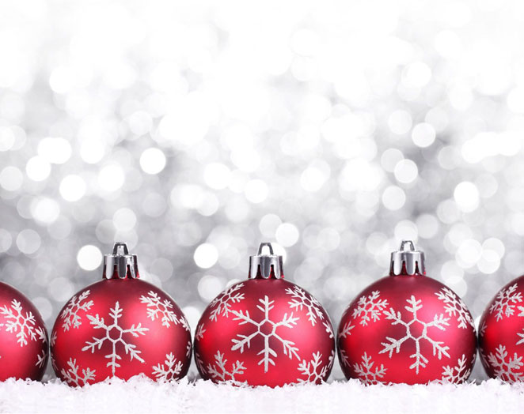

A karácsony az év egyik legmeghittebb időszaka, amikor a szeretet, a család és az összetartozás kerül a középpontba. Az utcák fényárban úsznak, a házakban ünnepi illatok terjengenek, és mindenki igyekszik egy kis boldogságot adni másoknak.
A karácsonyi időszak nemcsak az ajándékokról szól, hanem arról is, hogy időt szánunk egymásra, és megosztjuk a szeretetet a körülöttünk élőkkel. A hóesés, a gyertyák fénye és a meleg italok mind hozzájárulnak az ünnep varázsához.
Készítette:Tofalvi-Plósz Ármin
A CSS készítője: Schrank Sebestyén